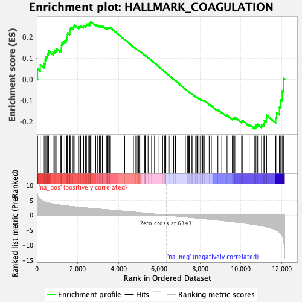
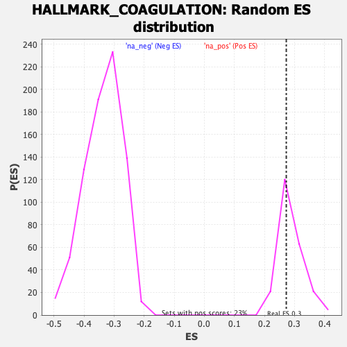

| | | Dataset | DE_t |
| Phenotype | NoPhenotypeAvailable |
| Upregulated in class | na_pos |
| GeneSet | HALLMARK_COAGULATION |
| Enrichment Score (ES) | 0.27258268 |
| Normalized Enrichment Score (NES) | 0.9450926 |
| Nominal p-value | 0.6 |
| FDR q-value | 0.67814255 |
| FWER p-Value | 0.999 |
Table: GSEA Results Summary

Fig 1: Enrichment plot: HALLMARK_COAGULATION
Profile of the Running ES Score & Positions of GeneSet Members on the Rank Ordered List
| SYMBOL | RANK IN GENE LIST | RANK METRIC SCORE | RUNNING ES | CORE ENRICHMENT | | 1 | LEFTY2 | 36 | 6.800 | 0.0481 | Yes |
| 2 | LRP1 | 167 | 5.239 | 0.0677 | Yes |
| 3 | ANG | 358 | 4.480 | 0.0741 | Yes |
| 4 | CPQ | 405 | 4.351 | 0.0912 | Yes |
| 5 | THBD | 445 | 4.262 | 0.1080 | Yes |
| 6 | PROS1 | 525 | 4.096 | 0.1200 | Yes |
| 7 | ITIH1 | 575 | 4.016 | 0.1337 | Yes |
| 8 | ITGA2 | 794 | 3.699 | 0.1307 | Yes |
| 9 | MASP2 | 888 | 3.571 | 0.1371 | Yes |
| 10 | DCT | 979 | 3.489 | 0.1431 | Yes |
| 11 | ACOX2 | 1164 | 3.304 | 0.1398 | Yes |
| 12 | P2RY1 | 1206 | 3.275 | 0.1483 | Yes |
| 13 | FBN1 | 1211 | 3.273 | 0.1598 | Yes |
| 14 | C8B | 1225 | 3.263 | 0.1705 | Yes |
| 15 | GP9 | 1290 | 3.188 | 0.1764 | Yes |
| 16 | F2RL2 | 1373 | 3.115 | 0.1803 | Yes |
| 17 | FYN | 1436 | 3.058 | 0.1855 | Yes |
| 18 | TIMP3 | 1468 | 3.033 | 0.1931 | Yes |
| 19 | CPN1 | 1483 | 3.023 | 0.2020 | Yes |
| 20 | HNF4A | 1503 | 3.002 | 0.2104 | Yes |
| 21 | TF | 1512 | 2.995 | 0.2197 | Yes |
| 22 | F8 | 1615 | 2.929 | 0.2207 | Yes |
| 23 | MMP14 | 1623 | 2.921 | 0.2295 | Yes |
| 24 | F9 | 1629 | 2.914 | 0.2385 | Yes |
| 25 | PLG | 1668 | 2.888 | 0.2445 | Yes |
| 26 | ITGB3 | 1774 | 2.815 | 0.2446 | Yes |
| 27 | F10 | 1812 | 2.797 | 0.2501 | Yes |
| 28 | SERPINE1 | 1832 | 2.789 | 0.2572 | Yes |
| 29 | GP1BA | 2042 | 2.628 | 0.2474 | Yes |
| 30 | C9 | 2110 | 2.577 | 0.2492 | Yes |
| 31 | DPP4 | 2148 | 2.546 | 0.2533 | Yes |
| 32 | PROZ | 2276 | 2.464 | 0.2494 | Yes |
| 33 | PF4 | 2296 | 2.449 | 0.2545 | Yes |
| 34 | MBL2 | 2387 | 2.395 | 0.2533 | Yes |
| 35 | CFH | 2423 | 2.374 | 0.2567 | Yes |
| 36 | F3 | 2431 | 2.371 | 0.2623 | Yes |
| 37 | CTSK | 2520 | 2.317 | 0.2609 | Yes |
| 38 | MMP8 | 2601 | 2.275 | 0.2600 | Yes |
| 39 | APOC3 | 2609 | 2.269 | 0.2651 | Yes |
| 40 | BMP1 | 2633 | 2.254 | 0.2688 | Yes |
| 41 | MMP2 | 2655 | 2.239 | 0.2726 | Yes |
| 42 | KLF7 | 2886 | 2.105 | 0.2584 | No |
| 43 | FGA | 2970 | 2.050 | 0.2561 | No |
| 44 | SIRT2 | 3064 | 1.988 | 0.2527 | No |
| 45 | MMP3 | 3130 | 1.942 | 0.2515 | No |
| 46 | RGN | 3211 | 1.899 | 0.2488 | No |
| 47 | F13B | 3219 | 1.895 | 0.2522 | No |
| 48 | FGG | 3409 | 1.798 | 0.2401 | No |
| 49 | F11 | 3442 | 1.782 | 0.2409 | No |
| 50 | HTRA1 | 3444 | 1.782 | 0.2444 | No |
| 51 | VWF | 3495 | 1.755 | 0.2436 | No |
| 52 | KLKB1 | 3534 | 1.726 | 0.2437 | No |
| 53 | SERPINC1 | 3558 | 1.710 | 0.2451 | No |
| 54 | MEP1A | 3583 | 1.690 | 0.2462 | No |
| 55 | CFD | 4308 | 1.237 | 0.1877 | No |
| 56 | CTSE | 4737 | 0.995 | 0.1532 | No |
| 57 | CTSO | 4855 | 0.918 | 0.1444 | No |
| 58 | PDGFB | 4946 | 0.854 | 0.1378 | No |
| 59 | DUSP14 | 4975 | 0.837 | 0.1362 | No |
| 60 | TIMP1 | 4997 | 0.822 | 0.1352 | No |
| 61 | SERPINB2 | 5011 | 0.814 | 0.1349 | No |
| 62 | TFPI2 | 5106 | 0.752 | 0.1277 | No |
| 63 | HMGCS2 | 5297 | 0.628 | 0.1123 | No |
| 64 | PLAT | 5301 | 0.623 | 0.1125 | No |
| 65 | PREP | 5308 | 0.619 | 0.1124 | No |
| 66 | PLEK | 5325 | 0.607 | 0.1115 | No |
| 67 | FURIN | 5406 | 0.551 | 0.1052 | No |
| 68 | TMPRSS6 | 5456 | 0.519 | 0.1014 | No |
| 69 | SPARC | 5626 | 0.411 | 0.0875 | No |
| 70 | CSRP1 | 5777 | 0.326 | 0.0752 | No |
| 71 | RABIF | 5778 | 0.326 | 0.0753 | No |
| 72 | F2 | 5992 | 0.203 | 0.0576 | No |
| 73 | MAFF | 6170 | 0.103 | 0.0429 | No |
| 74 | CPB2 | 6272 | 0.045 | 0.0345 | No |
| 75 | THBS1 | 6279 | 0.037 | 0.0340 | No |
| 76 | CASP9 | 6316 | 0.016 | 0.0310 | No |
| 77 | C8A | 6325 | 0.011 | 0.0304 | No |
| 78 | COMP | 6464 | -0.073 | 0.0189 | No |
| 79 | C8G | 6486 | -0.085 | 0.0172 | No |
| 80 | MMP10 | 6617 | -0.165 | 0.0064 | No |
| 81 | CAPN2 | 6710 | -0.230 | -0.0012 | No |
| 82 | HRG | 6796 | -0.293 | -0.0082 | No |
| 83 | ISCU | 7282 | -0.613 | -0.0481 | No |
| 84 | FN1 | 7395 | -0.686 | -0.0569 | No |
| 85 | MSRB2 | 7451 | -0.718 | -0.0609 | No |
| 86 | MMP1 | 7479 | -0.738 | -0.0625 | No |
| 87 | CAPN5 | 7579 | -0.793 | -0.0701 | No |
| 88 | PROC | 7584 | -0.796 | -0.0697 | No |
| 89 | LGMN | 7638 | -0.833 | -0.0733 | No |
| 90 | WDR1 | 7787 | -0.933 | -0.0847 | No |
| 91 | GSN | 7818 | -0.952 | -0.0862 | No |
| 92 | DUSP6 | 7862 | -0.975 | -0.0887 | No |
| 93 | SERPING1 | 7944 | -1.042 | -0.0942 | No |
| 94 | C1S | 7957 | -1.052 | -0.0940 | No |
| 95 | C1R | 8023 | -1.091 | -0.0981 | No |
| 96 | PLAU | 8045 | -1.109 | -0.0985 | No |
| 97 | A2M | 8105 | -1.157 | -0.1019 | No |
| 98 | USP11 | 8120 | -1.164 | -0.1016 | No |
| 99 | LAMP2 | 8136 | -1.170 | -0.1013 | No |
| 100 | SH2B2 | 8176 | -1.192 | -0.1030 | No |
| 101 | MMP11 | 8204 | -1.210 | -0.1036 | No |
| 102 | LTA4H | 8242 | -1.237 | -0.1050 | No |
| 103 | PEF1 | 8451 | -1.394 | -0.1201 | No |
| 104 | RAC1 | 8557 | -1.465 | -0.1265 | No |
| 105 | OLR1 | 8846 | -1.667 | -0.1474 | No |
| 106 | CTSH | 8877 | -1.689 | -0.1467 | No |
| 107 | ADAM9 | 9068 | -1.814 | -0.1589 | No |
| 108 | C1QA | 9289 | -1.962 | -0.1729 | No |
| 109 | CFI | 9327 | -1.988 | -0.1716 | No |
| 110 | F12 | 9584 | -2.182 | -0.1876 | No |
| 111 | RAPGEF3 | 9630 | -2.225 | -0.1859 | No |
| 112 | MMP15 | 9689 | -2.279 | -0.1850 | No |
| 113 | PRSS23 | 9745 | -2.325 | -0.1836 | No |
| 114 | CTSV | 10039 | -2.535 | -0.2009 | No |
| 115 | MMP9 | 10074 | -2.576 | -0.1963 | No |
| 116 | APOC1 | 10412 | -2.896 | -0.2151 | No |
| 117 | APOA1 | 10665 | -3.136 | -0.2252 | No |
| 118 | GNB2 | 10744 | -3.224 | -0.2202 | No |
| 119 | CLU | 10830 | -3.328 | -0.2150 | No |
| 120 | CTSB | 11017 | -3.576 | -0.2163 | No |
| 121 | C3 | 11133 | -3.725 | -0.2105 | No |
| 122 | ANXA1 | 11157 | -3.765 | -0.1968 | No |
| 123 | CRIP2 | 11255 | -3.902 | -0.1880 | No |
| 124 | SERPINA1 | 11263 | -3.917 | -0.1716 | No |
| 125 | S100A1 | 11712 | -4.850 | -0.1829 | No |
| 126 | HPN | 11761 | -5.020 | -0.1590 | No |
| 127 | S100A13 | 11892 | -5.702 | -0.1339 | No |
| 128 | MMP7 | 11939 | -5.935 | -0.0988 | No |
| 129 | CFB | 12028 | -6.655 | -0.0571 | No |
| 130 | CD9 | 12091 | -7.825 | 0.0054 | No |
Table: GSEA details [plain text format]

Fig 2: HALLMARK_COAGULATION: Random ES distribution
Gene set null distribution of ES for HALLMARK_COAGULATION